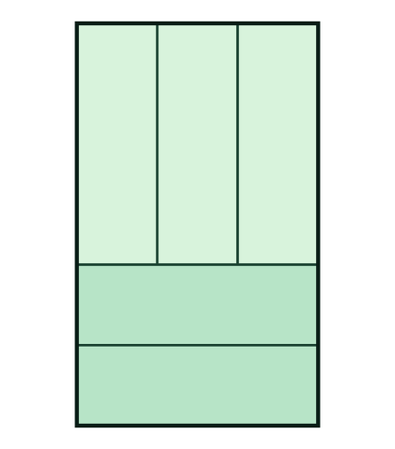

Exemplo 1.1.1. O Enigma dos Azulejos Idênticos.
Um retângulo grande foi construído juntando \(5\) retângulos pequenos e idênticos, como mostra a figura a seguir:

Sabendo que o perímetro de cada retângulo pequeno é igual a \(40\text{ cm}\text{,}\) qual é o perímetro do retângulo grande?
(A) \(60\text{ cm}\) (B) \(70\text{ cm}\) (C) \(80\text{ cm}\) (D) \(90\text{ cm}\) (E) \(100\text{ cm}\)
Dica 1.
Dica 2.
Solução.
Pista 1: Chame o lado menor de cada retângulo pequeno de \(L\) (largura) e o lado maior de \(C\) (comprimento). Olhe para a largura total da figura: ela é formada por \(3\) larguras em cima e por \(1\) comprimento embaixo. O que isso revela sobre a relação entre \(C\) e \(L\text{?}\)
Pista 2: Como \(C = 3L\text{,}\) o perímetro de cada peça pequena é \(2(C + L) = 2(3L + L) = 8L = 40\text{ cm}\text{.}\) Descubra o valor de \(L\) e use-o para calcular a altura e a largura do retângulo completo.
Resposta Correta: (C) 80 cm
1. Pela figura, a largura total do retângulo grande pode ser medida de duas formas:
- No topo: \(3\) larguras dos retângulos em pé (\(3L\)).
- Na base: o comprimento de um retângulo deitado (\(C\)).
Logo, \(C = 3L\text{.}\)
2. O perímetro de uma peça pequena é:
\begin{equation*}
2(C + L) = 2(3L + L) = 8L = 40\text{ cm} \implies L = 5\text{ cm}.
\end{equation*}
Consequentemente, o comprimento de cada peça é \(C = 3 \times 5 = 15\text{ cm}\text{.}\)
3. As dimensões do retângulo grande são:
- Largura: \(C = 15\text{ cm}\text{.}\)
- Altura: \(C + 2L = 15 + 10 = 25\text{ cm}\text{.}\)
Portanto, o perímetro do retângulo grande é \(2 \times (15 + 25) = 2 \times 40 = 80\text{ cm}\text{.}\)